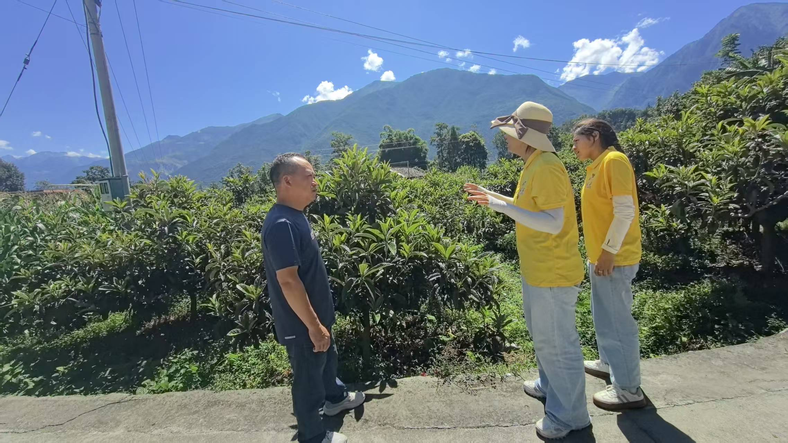

雅砻江峡谷，高山孕育的早春枇杷
冕宁地处四川凉山州，雅砻江穿行而过，形成了典型的高山峡谷河谷地貌。
- 海拔较高：山地果园光照充足，日晒时间长；
- 昼夜温差大：有利于糖分积累，果实更甜；
- 砂质土壤：透气透水、土层深厚，适合枇杷根系生长；
- 早春成熟：河谷小气候温暖，上市早，抢占鲜果先机。
冕宁地处四川凉山州，雅砻江穿行而过，形成了典型的高山峡谷河谷地貌。
当地果农坚持生态种植理念，守护每一棵枇杷的天然口感：

冕宁锦屏镇是当地枇杷主产区，种植已有相当规模。产区积极推行
“团队 + 公司 + 合作社 + 农户”
的产业发展模式，统一标准、统一品牌、统一销售，带动当地村民通过土地流转、入股分红、务工采摘等多渠道增收，助力乡村振兴。
村民在自家果园辛勤劳作，也参与产地宣传与三下乡实践，让这颗小小的枇杷成为实打实的“致富果”。

把冕宁枇杷品质讲清楚
得益于河谷温暖小气候，冕宁早春枇杷3–4月便陆续成熟，比许多产区更早上市，鲜嫩抢先。
高山光照足、温差大，加上生态种植，枇杷皮薄肉厚、汁水充沛、入口化渣，甜而不腻。
果园、农户、合作社一体化运作，产地可实地考察，采购有源可溯，值得信赖。